¡Hola, soy Daniel Campuzano!
Frontend Developer
¡Hola, soy Daniel Campuzano!
Frontend Developer

Hola! Me llamo Daniel, tengo 19 años y estoy buscando mi primer trabajo como Frontend
Developer.
Soy Técnico en informática graduado y actualmente estoy cursando la carrera de Ingeniería
en Informática.
Soy una persona dedicada, analitica y extrovertida. Me divierte enfrentarme a problemas que
parecen no tener solucion
y superarme día a día.
Creo en la buena comunicación, el respeto y el trabajo en equipo como los valores
principales de
la empresa con la que quiero trabajar.
Asistí 7 años a una secundaria técnica con el objetivo de aprender programación y poder
vivir de
lo
que me gusta: la tecnología
Durante mi paso por la técnica programé en Arduino, Assembler, Css, C++, C#, Html, Java,
Javascript,
Jquery, PHP, Sql, Sass y TypeScript.
Gané las Olimpíadas de matemáticas en tercero, y participe en dos ocasiones en las de
programación.
Participé junto a un compañero en las batallas de sumo robot y exhibimos los mismos y otros
proyectos más en diversas ferias de
ciencia.
Luego de un agitado 2020 por obvias razones, finalmente decidí ingresar a la universidad y
estudiar
ingeniería en informática.
Actualmente me encuentro ya habiendo realizado el ingreso esperando que comience el año
lectivo.
Mis expectativas están puestas en convertirme en un profesional con renombre y participar en
proyectos ambiciosos.
En medio de un marco de pandemia y sin poder cursar la facultad, decidí empezar a fortalecer
mis
conocimientos como frontend dev soñando poder conseguir trabajo y vivir de ello.
Empecé por React, y voy en camino de capacitarme en muchas mas tecnologías.
En este curso aprendí desde como crear un componente estático hasta utilizar Context,
Effects,
States y custom Hooks.
A lo largo de mi tecnicatura programé en varios lenguajes. Empezando por C# y terminando en Java, éstas son las tecnologías y librerías que domino.


 



Brolify es un proyecto de Uxor IT, la empresa Marplatense en donde hice mis prácticas
profesionalizantes.
Trabajé tres meses en esta compañía, retocando Frontend y Backend, jugando con el MVC y
aprendiendo
de
mi tutor a cargo.
Utilicé PHP como lenguaje principal trabajando del lado del servidor, recibiendo consultas y
haciendo
las debidas conexiones con la base de datos y el Frontend. Programé en Javascript y Jquery,
casi
tanto como en PHP.

D-Commerce es el proyecto final del curso de React que cursé en Coderhouse.
Si bien no es una maravilla estéticamente (planeo hacer el curso de Ui/Ux, no se preocupen)
contiene
todas las funcionalidades que vimos durante el curso y aprovecha al máximo React.
Tiene un carro en el que la información es consistente y persistente gracias al uso de
Effects,
State y
Context.
Utiliza custom hooks para reutilizar código en el checkout y toda la información la trae
desde
Firebase a través de su API.

Este es un proyecto personal en el que estoy poniendo en práctica mis conocimientos en React y utilizando la clásica api del clima para hacer una página simple que demuestre mis conocimientos.